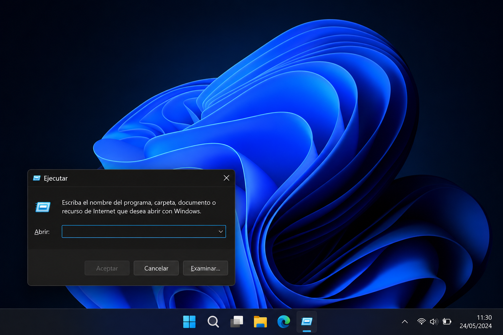

Video rápido
Mira el Short paso a paso
Cuando publiques el Short, reemplaza este bloque por el iframe oficial de YouTube.
Qué aprenderás
- Qué es el Visor de Eventos de Windows.
- Cómo abrirlo con el comando eventvwr.msc.
- Dónde revisar errores críticos y advertencias.
- Cómo identificar si un error se repite muchas veces.
¿Qué es el Visor de Eventos?
El Visor de Eventos es una herramienta integrada de Windows que registra sucesos importantes del sistema, aplicaciones, seguridad, servicios y componentes internos.
A diferencia del Historial de Confiabilidad, esta herramienta muestra información mucho más técnica. Por eso es útil cuando necesitas investigar un problema con más detalle.
💡 Consejo WinHacks
No intentes corregir todos los errores que veas. Windows registra muchos eventos normales. Lo importante es buscar errores repetidos, recientes o relacionados con un problema real.
Antes de preocuparte
Ver errores en el Visor de Eventos no significa automáticamente que tu PC esté dañada. La clave es revisar patrones, fechas y eventos que se repiten.
Paso a paso
Abre Ejecutar
Presiona Win + R para abrir la ventana Ejecutar de Windows.

Escribe el comando
Escribe este comando y presiona Enter:
eventvwr.msc
Abre los Registros de Windows
En el panel izquierdo, entra en Registros de Windows. Ahí encontrarás varias secciones importantes del sistema.

Revisa Sistema y Aplicación
Las secciones más útiles para usuarios normales suelen ser:
- Sistema: errores del sistema, drivers, servicios y Windows.
- Aplicación: errores de programas instalados.
Qué significan los niveles de evento
Error
Indica que algo falló. Puede ser una aplicación, un servicio, un controlador o un componente de Windows.
Advertencia
Indica un posible problema. No siempre es grave, pero conviene revisarlo si aparece muchas veces.
Información
Indica eventos normales del sistema, como servicios iniciados, actualizaciones o procesos registrados.
Qué debes revisar primero
Empieza filtrando por fecha. Revisa los eventos que ocurrieron justo cuando tu PC falló, se congeló, se reinició o un programa se cerró solo.
Si el mismo error aparece muchas veces, copia el nombre del origen, el ID del evento y el mensaje principal. Eso puede ayudarte a investigar la causa exacta.
✅ Resultado esperado
Al usar el Visor de Eventos deberías poder identificar errores repetidos, servicios que fallan o aplicaciones que generan problemas en Windows.
Cuándo usar esta herramienta
- Cuando Windows se reinicia solo.
- Cuando un programa se cierra inesperadamente.
- Cuando aparece una pantalla azul.
- Cuando un driver parece fallar.
- Después de una actualización problemática.
- Cuando necesitas más detalle que el Historial de Confiabilidad.
Errores comunes
Veo demasiados errores
Es normal ver muchos eventos. No todos requieren acción. Prioriza los errores recientes y repetidos.
No entiendo el mensaje
Copia el ID del evento, el origen y la descripción. Esos datos sirven para buscar una explicación más precisa.
No encuentro el problema
Usa primero el Historial de Confiabilidad para ubicar la fecha del fallo y luego revisa esa misma fecha en el Visor de Eventos.
Preguntas frecuentes
¿Funciona en Windows 11?
Sí. El Visor de Eventos está disponible en Windows 11.
¿Funciona en Windows 10?
Sí. También está disponible en Windows 10.
¿Necesito instalar algo?
No. Es una herramienta integrada de Windows.
¿El Visor de Eventos repara errores?
No. Sirve para diagnosticar. Te muestra pistas sobre qué está fallando.
¿Debo borrar los registros?
No es necesario. Los registros ayudan a diagnosticar problemas y no conviene eliminarlos sin motivo.
Guía gratis
50 Secretos de Windows que la mayoría nunca descubre
Descarga una guía práctica con herramientas ocultas, comandos útiles y trucos seguros para Windows 10 y Windows 11.